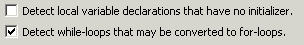
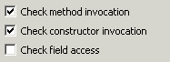

Audit - Rules - Potential RefactoringDescriptionThis group contains audit rules that look for places where the code might be refactored to provide better design and greater flexibility. |
| Rules: |
Summary
Identify properties that can be added to an interface.
Description
This audit rule finds methods in concrete classes that can be added to their corresponding interfaces. If a class is named Foo and has a "bar" property with getBar() and setBar() methods, the corresponding interface, IFoo, will be checked to see if it defines the getter and setter method.
Example
If the class Employee were defined as:
public class Employee implements IEmployee
and defined the methods getSSN() and setSSN() that were not declared in the IEmployee interface, then those methods would be flagged as violations.
Summary
Some classes could be converted to interfaces.
Description
This audit rule finds classes containing no methods or only abstract methods, and no fields or only static final fields. Classes such as these could be converted to an equivalent interface providing increased implementation flexibility.
Example
The following class declaration would be flagged as a violation:
public abstract class RunnableWithException
{
public abstract void run()
throws Exception;
}
Summary
Instance fields that are only used in an inner class should be defined in the inner class.
Description
This audit rule looks for private instance fields that are only being used within a single inner class. There are valid reasons for structuring code this way, such as when the lifetime of the field needs to be longer than the lifetime of instances of the inner class or when the field needs to be shared by some (but not all) of the instances of the inner class. Generally, however, such fields should be declared by the inner class.
Summary
Declare variables so that they have as small a scope as possible.
Description
This rule looks for variables whose scope is too broad. If a variable is declared without an initializer it is probably declared too early, and will be flagged. While-loops that could be converted to for-loops, reducing the scope of the iteration variable, are also detected.
Example
In the following method, the variable "element" could be defined in the body of the loop, and the while loop could be converted to a for loop so that the loop variable "index" could be more limited in scope:
public int sum(int[] array)
{
int index, element;
index = 0;
while (index < array.length) {
element = array[i];
sum = sum + element;
index = index + 1;
}
}

Summary
Consider using interfaces instead of reflection.
Description
This audit rule identifies uses of reflective capabilities and flags them for review. Much of what is accomplished via reflection can be done, faster and simpler, with judicious use of interfaces.

Summary
The type of "this" should not be tested using the "instanceof" operator.
Description
This audit rule checks for places where the type of "this" is being tested using the "instanceof" operator. Code that depends on the type of an object should be distributed to the sublasses so that polymorphism will automatically choose the right code to execute.
Example if (this instanceof SpecialSublass) ...